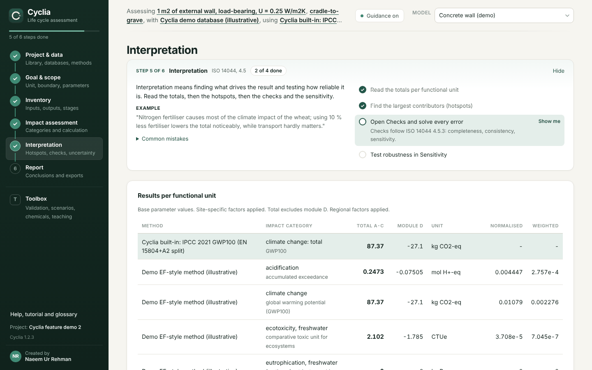
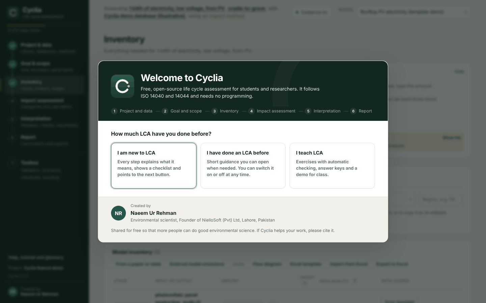
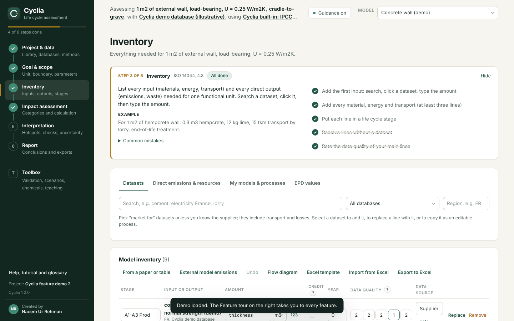
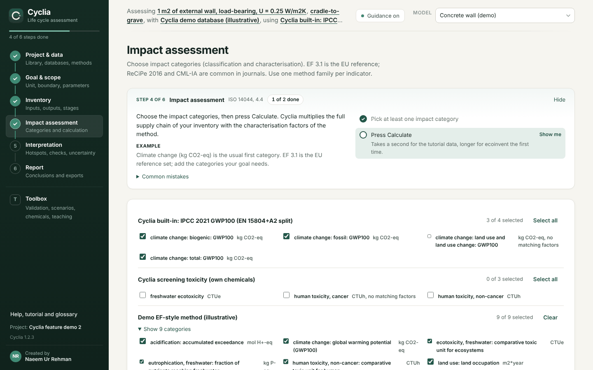
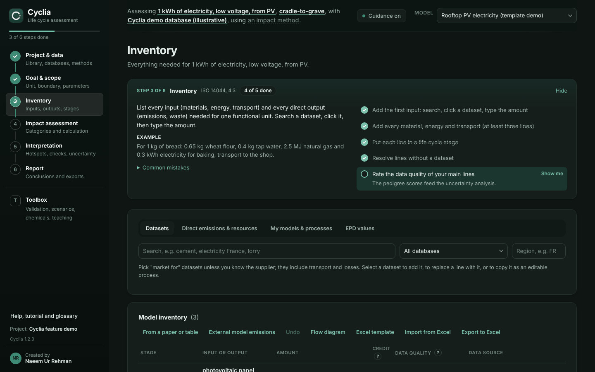

Free, open-source LCA software
Cyclia is desktop software for life cycle assessment. It guides you through an ISO 14040/14044 study, calculates with your own ecoinvent licence or free databases, and writes reports, EPDs and carbon footprints. No programming needed.

Validated results
| Check | Result |
|---|---|
| ecoinvent's published LCIA results (EF 3.1, cut-off, 100 datasets x 25 categories) | 100 % of 2,500 results within 0.1 %, median deviation 3.9e-07 % |
| Inventory check against ecoinvent's cumulative LCI | Each deviation split into an inventory and a factor part |
| Brightway (bw2calc 3.1), its own matrices and solver | All results within 1e-6; largest difference 1.4e-12 on databases up to 10,000 datasets |
| Validation suite in the app | 35 product systems with exact known answers |
| Independent second calculation (dense LU and GMRES) | Largest difference 5.7e-14 |
| Characterisation factors against openLCA, Brightway or CSV | Flow by flow, with the effect on results |
| ILCD+EPD export | Validated against the official schemas |
| Reference tests | Comparative probabilities, nested uncertainty and data quality, AWARE, LANCA, SQI, social LCA, MFA and MCI, against analytic or hand-calculated values |
| Automated tests | 227, on Windows, macOS and Linux before every release |
Details: ecoinvent validation and cross validation. Still open: the comparison with openLCA, ReCiPe 2016 and CML-IA against ecoinvent, and a check against the official AWARE and LANCA factor packages. Every feature's status is in the feature status.
What Cyclia does
Guided ISO 14044 study
- Goal and scope, inventory, impact assessment, interpretation and reporting in order
- Explanations, examples, common mistakes and checklists at every step
- Guided first study, complete demo or your own project
- Glossary, tutorial and feature tour
Databases
- ecoinvent download with your own licence, or a release you already have
- openLCA JSON-LD, SimaPro CSV, ILCD (ÖKOBAUDAT, EF), ecoSpold1 and ecoSpold2
- Staged imports with integrity report and rollback; named suppliers kept, ambiguous ones never guessed
- Streaming of large imports
- Database explorer, per-database check, version comparison and model migration
- Custom data entry: own processes, product and elementary flows and factors, with identifiers, provenance and unit checks; unknown factors are reported, never counted as zero
Impact assessment
- EF 3.1 with normalisation and weighting, ReCiPe 2016, CML-IA, IPCC 2021 (EN 15804+A2 split), any CSV method
- AWARE water scarcity: annual, monthly and GIS watersheds
- LANCA land use and soil quality index
- Dynamic GWP, regional and site-specific factors
- Toxicity screening and import of official factors by CAS number
Modelling
- Parameters, formulas and scenarios
- Allocation by mass, economic value, energy or physical relation; system expansion and avoided products
- Circular Footprint Formula (EU PEF); EN 15804+A2 modules A to D; biogenic carbon
- Prospective and consequential background scenarios (premise, Activity Browser)
- Nested models, sector templates, inventory from tables in papers
Uncertainty and interpretation
- Monte Carlo with pedigree uncertainty and correlated parameters, through every nested model, with convergence check
- Sobol indices, parameter sweeps, optimisation and Pareto fronts
- Contribution analysis, supply chain tree, Sankey diagram and world map
- Comparative LCA with equivalence checks and a conclusion per category at 90, 95 or 99 % confidence
- Key findings, burden-shifting alerts, pedigree indicator and PEF DQR kept apart
Costing, circularity and social LCA
- Life cycle costing with discounting, cost types and replacements
- Material flow analysis: stocks, lifetimes, collection rate, recycling efficiency, MCI, link to LCA
- Social LCA screening of worker hours and risk hours with PSILCA, SOCA or own data
Reports and declarations
- ISO 14044 Word report, executive summary, Excel workbook, 300 dpi figures
- EPD per ISO 14025:2026 and EN 15804+A2 with EPD International, IBU and INIES layouts (drafts until verified)
- ILCD+EPD XML for ÖKOBAUDAT and InData
- ISO 14067 carbon footprint, GHG Protocol workbook, PEF most relevant results, critical review checklist
Open and reproducible
- Export to Brightway and openLCA; Python and R clients
- Reproducibility bundles with database and method fingerprints
- Exercises with automatic checking for teaching
- Free and open source (MIT); your data stays on your computer
Screenshots




Frequently asked questions
Is Cyclia free?
Yes. Cyclia is free and open-source software under the MIT licence, for academic and commercial use.
Do I need an ecoinvent licence?
Only for ecoinvent data. Cyclia also reads free databases such as USLCI, Agribalyse and ELCD in openLCA JSON-LD, ILCD or SimaPro CSV format, and includes a tutorial database.
Do I need to know programming?
No. Everything works through the interface. Python and R clients are available for scripted work.
How accurate are Cyclia's results?
Compared with ecoinvent's published LCIA results (EF 3.1, cut-off), 100 % of 2,500 results agree within 0.1 %, with a median deviation of 3.9e-07 %.
Which standards does Cyclia follow?
ISO 14040/14044, ISO 14071, ISO/TS 14074, ISO 14067, ISO 14025:2026, EN 15804+A2 and the EU PEF method (EF 3.1).
Does my data leave my computer?
No. Projects and databases are stored locally. Cyclia goes online only to download ecoinvent with your login and to check for updates.
Cite Cyclia
Rehman, N. U. (2026). Cyclia: open-source life cycle assessment software for researchers (version 1.6.0) [Computer software]. https://doi.org/10.5281/zenodo.23853747